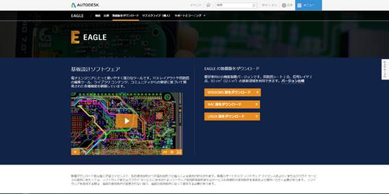
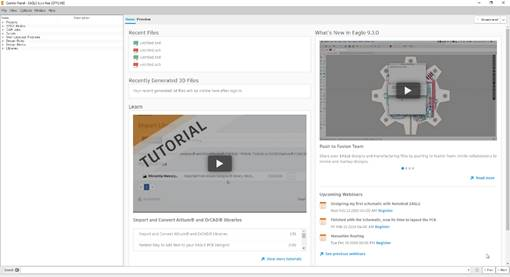
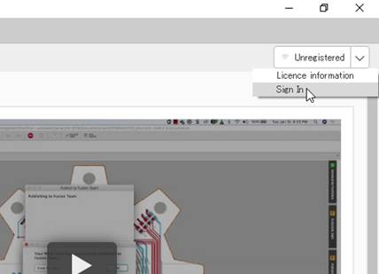
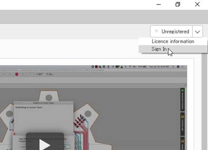
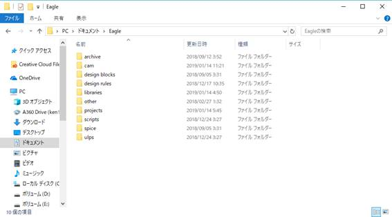
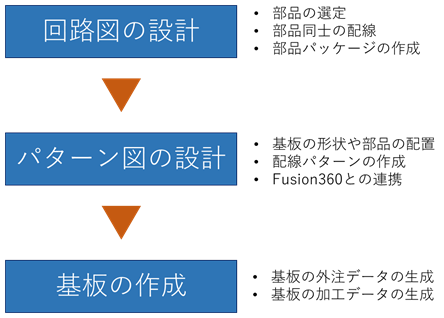

EAGLEを用いた基板設計手法
作成者：井口拳太
EAGLEとはAutodesk社が提供している電子回路や基板の製作に用いる電子設計オートメーションソフトウェアです．これを用いることにより，基板を設計するにあたり，回路図やコンポーネント配置，配線，プリント基板（PCB）をシームレスに行うことができます．現在ではAutodesk社が提供しているクラウドバース3DCADソフトのFusin360と連携することが可能です．これによりFusion360で作成したパーツにEagle1で設計した基板データを反映させることで，自由な形での基板設計や，CADソフト上での電子部品を含む基板の干渉の確認及び，配置修正を瞬時に行うことが可能となります．
図 1 EAGLE
|
本説明書は細かく内容を説明していく過程でページ数が多くなってしまいます．ですので，PDFにて閲覧する際には「Adobe Acrobat Reader」を用いることをお勧めします．PDFにてのしおり機能を有効にしていますので，しおりから閲覧したいページへ飛びながら読み進めていくことができます． |
2. 目次
3. Eagleのインストール
EAGLEのインストーラはAutodesk社のホームページからダウンロードが可能です．下記のリンクから図 2のようなページへ飛び，ダウンロードを行ってください．EAGLEのインストールはインストーラの指示通りに行えば問題はありません．ちなみにEAGLEのバージョンの更新頻度を多く，執筆時（2019年2月）の「Autodesk_EAGLE_9.3.0」よりも多くバージョンが更新されることが予想されますが，ひとまずは最新版のものをダウンロードすれば問題はないかと思います．

図 2 EAGLE ダウンロードページ
|
ダウンロードリンク |
問題なくインストールできると，図 3のようにソフトを立ち上げることができるかと思います．このままソフトを使用することも可能ですが，Fusion360との連携や，オンラインライブラリを用いる場合にはAutodeskアカウントでログインする必要があります．図 4に示すように右上の「Sign In」からログインすることができます．

図 3 EAGLEの起動
 

図 4 サインイン
また，EAGLEのインストール時にPCのドキュメントに図 5に示すようなフォルダが生成されます．これらのフォルダに所定のデータを格納することで，回路の部品配置や，基板の配線チェック，加工，外注用のデータ生成等を容易にすることができます．それぞれのフォルダの活用方法は基板設計と交えて下記に説明していきます．

図 5 生成されるフォルダ
EAGLEでの作業工程は主に3つに分けられます．

図 6 作業工程
|
① 回路図の設計： |
設計する基板に使用する部品の選定や部品同士の配線図の作成を行います．また，使用したい部品のデータがない場合は部品パッケージの作成も行います． |
|
② パターン図の設計 |
回路図のデータをもとに，実際の基板の形状と部品配置，配線の決定を行います．Fusion360との連携はこのタイミングで行い，基板を実装するモデルにおいての基板データの反映，及び修正を行います． |
|
③ 基板の作成 |
設計したパターン図のデータをもとに基板の作成を行います．基板の作成は主に基板作成会社への外注と自作でのNC加工やエッチングといった手法があります |
tt